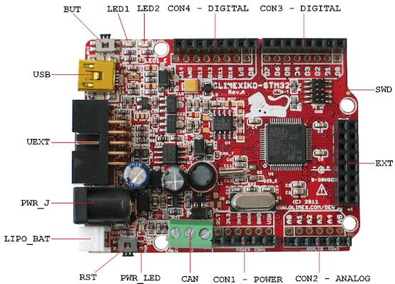

OLIMEXINO-STM32
Overview
The OLIMEXINO-STM32 board is based on the STMicroelectronics STM32F103RB ARM Cortex-M3 CPU.
More information about the board can be found at the OLIMEXINO-STM32 website and OLIMEXINO-STM32 user manual. The ST STM32F103xB Datasheet contains the processor’s information and the datasheet.
Supported Features
The olimexino_stm32 board supports the hardware features listed below.
- on-chip / on-board
- Feature integrated in the SoC / present on the board.
- 2 / 2
-
Number of instances that are enabled / disabled.
Click on the label to see the first instance of this feature in the board/SoC DTS files. -
vnd,foo -
Compatible string for the Devicetree binding matching the feature.
Click on the link to view the binding documentation.
Pin Mapping

OLIMEXINO-STM32 connectors
LED
LED1 (green) = PA5
LED2 (yellow) = PA1
PWR_LED (red) = power
External Connectors
SWD
PIN # |
Signal Name |
STM32F103RB Functions |
|---|---|---|
1 |
VCC |
N/A |
2 |
TMS / SWDIO |
JTMS / SWDIO / PA13 |
3 |
GND |
N/A |
4 |
TCK / SWCLK |
JTCK / SWCLK / PA14 |
5 |
GND |
N/A |
6 |
TDO / SWO |
JTDO /TIM2_CH2 / PB3 / TRACESWO / SPI1_SCK |
7 |
Cut off |
N/A |
8 |
TDI |
JTDI / TIM2_CH1_ETR / PA15 / SPI1_NSS |
9 |
GND |
N/A |
10 |
RESET |
NRST |
UEXT
PIN # |
Signal Name |
STM32F103RB Functions |
|---|---|---|
1 |
VCC |
N/A |
2 |
GND |
N/A |
3 |
D7 (TXD1) |
PA9 / USART1_TX / TIM1_CH2 |
4 |
D8 (RXD1) |
PA10 / USART1_RX / TIM1_CH3 |
5 |
D29 (SCL2) |
PB10 / I2C2_SCL / USART3_TX / TIM2_CH3 |
6 |
D30 (SDA2) |
PB11 / I2C2_SDA / USART3_RX / TIM2_CH4 |
7 |
D12 (MISO1) |
PA6 / SPI1_MISO / ADC12_IN6 / TIM3_CH1 / TIM1_BKIN |
8 |
D11 (MOSI1) |
PA7 / SPI1_MOSI / ADC12_IN7 / TIM3_CH2 / TIM1_CH1N |
9 |
D13 (SCK / LED1) |
PA5 / SPI1_SCK / ADC12_IN5 |
10 |
UEXT_#CS |
N/A |
EXT
PIN # |
Signal Name |
STM32F103RB Functions |
|---|---|---|
1 |
D23_EXT |
PC15 / OSC32_OUT |
2 |
D24 (CANTX) |
PB9 / TIM4_CH4 / I2C1_SDA / CANTX |
3 |
D25 (MMC_CS) |
PD2 / TIM3_ETR |
4 |
D26 |
PC10 / USART3_TX |
5 |
D27 |
PB0 / ADC12_IN8 / TIM3_CH3 / TIM1_CH2N |
6 |
D28 |
PB1 / ADC12_IN9 / TIM3_CH4 / TIM1_CH3N |
7 |
D29 (SCL2) |
PB10 / I2C2_SCL / USART3_TX / TIM2_CH3 |
8 |
D30 (SDA2) |
PB11 / I2C2_SDA / USART3_RX / TIM2_CH4 |
9 |
D31 (#SS2) |
PB12 / SPI2_NSS / I2C2_SMBAI / USART3_CK / TIM1_BKIN |
10 |
D32 (SCK2) |
PB13 / SPI2_SCK/ USART3_CTS / TIM1_CH1N |
11 |
D33 (MISO2) |
PB14 / SPI2_MISO / USART3_RTS / TIM1_CH2N |
12 |
D34 (MOSI2) |
PB15 / SPI2_MOSI / TIM1_CH3N |
13 |
D35 |
PC6 / TIM3_CH1 |
14 |
D36 |
PC7 / TIM3_CH2 |
15 |
D37 |
PC8 / TIM3_CH3 |
16 |
GND |
N/A |
Arduino Headers
CON1 power
PIN # |
Signal Name |
STM32F103RB Functions |
|---|---|---|
1 |
RESET |
NRST |
2 |
VCC (3V3) |
N/A |
3 |
VDD (3V3A) |
N/A |
4 |
GND |
N/A |
5 |
GND |
N/A |
6 |
VIN |
N/A |
CON2 analog
PIN # |
Signal Name |
STM32F103RB Functions |
|---|---|---|
1 |
D15 (A0) |
PC0 / ADC12_IN10 |
2 |
D16 (A1) |
PC1 / ADC12_IN11 |
3 |
D17 (A2) |
PC2 / ADC12_IN12 |
4 |
D18 (A3) |
PC3 / ADC12_IN13 |
5 |
D19 (A4) |
PC4 / ADC12_IN14 |
6 |
D20 (A5) |
PC5 / ADC12_IN15 |
CON3 digital
PIN # |
Signal Name |
STM32F103RB Functions |
|---|---|---|
1 |
D0 (RXD2) |
PA3 / USART2_RX / ADC12_IN3 / TIM2_CH4 |
2 |
D1 (TXD2) |
PA2 / USART2_TX / ADC12_IN2 / TIM2_CH3 |
3 |
D2 |
PA0 / WKUP / USART2_CTS / ADC12_IN0 / TIM2_CH1 |
4 |
D3 (LED2) |
PA1 / USART2_RTS / ADC12_IN1 / TIM2_CH2 |
5 |
D4 |
PB5 / I2C1_SMBAI / TIM3_CH2 / SPI1_MOSI |
6 |
D5 |
PB6 / I2C1_SCL / TIM4_CH1 / USART1_TX |
7 |
D6 |
PA8 / USART1_CK / TIM1_CH1 / MCO |
8 |
D7 (TXD1) |
PA9 / USART1_TX / TIM1_CH2 |
CON4 digital
PIN # |
Signal Name |
STM32F103RB Functions |
|---|---|---|
1 |
D8 (RXD1) |
PA10 / USART1_RX / TIM1_CH3 |
2 |
D9 |
PB7 / I2C1_SDA / TIM4_CH2 / USART1_RX |
3 |
D10 (#SS1) |
PA4 / SPI1_NSS / USART2_CK / ADC12_IN4 |
4 |
D11 (MOSI1) |
PA7 / SPI1_MOSI / ADC12_IN7 / TIM3_CH2 / TIM1_CH1N |
5 |
D12 (MISO1) |
PA6 / SPI1_MISO / ADC12_IN6 / TIM3_CH1 / TIM1_BKIN |
6 |
D13 (SCK1 / LED1) |
PA5 / SPI1_SCK / ADC12_IN5 |
7 |
GND |
N/A |
8 |
D14 (CANRX) |
PB8 / TIM4_CH3 / I2C1_SCL / CANRX |
CAN
PIN # |
Signal Name |
|---|---|
1 |
GND |
2 |
CAN L |
3 |
CAN H |
System Clock
OLIMEXINO-STM32 has two external oscillators. The frequency of the slow clock is 32.768 kHz. The frequency of the main clock is 8 MHz. The processor can setup HSE to drive the master clock, which can be set as high as 72 MHz.
Serial Port
OLIMEXINO-STM32 board has up to 3 U(S)ARTs. The Zephyr console output is assigned to USART1. Default settings are 115200 8N1.
SPI
OLIMEXINO-STM32 board has up to 2 SPIs. The default SPI mapping for Zephyr is:
SPI1_NSS : PA4
SPI1_SCK : PA5
SPI1_MISO : PA6
SPI1_MOSI : PA7
I2C
The OLIMEXINO-STM32 board supports two I2C devices. The default I2C mapping for Zephyr is:
I2C1_SCL : PB6
I2C1_SDA : PB7
I2C2_SCL : PB10
I2C2_SDA : PB11
USB
OLIMEXINO-STM32 board has a USB 2.0 full-speed device interface available through its mini USB connector.
USB_DM : PA11
USB_DP : PA12
CAN
OLIMEXINO-STM32 board has a CAN interface with transceiver on board. CAN is accessible through a screw terminal.
CAN_RX : PB8
CAN_TX : PB9
Jumpers
The Zephyr kernel uses the OLIMEXINO-STM32 default jumper settings. Note that all jumpers on the board are SMD type. You will need to solder, unsolder, or cut them in order to reconfigure them.
The default jumper settings for the OLIMEXIMO-STM32E are:
Jumper Name |
Open |
Close |
|---|---|---|
LED1_E |
x |
|
LED2_E |
x |
|
D23_E |
x |
|
R-T |
x |
|
P10_E |
x |
Jumper Name |
D10 |
D4 |
|---|---|---|
D10/D4 |
x |
Flashing Zephyr onto OLIMEXINO-STM32
The olimexino_stm32 board supports the runners and associated west commands listed below.
| flash | debug |
|---|
Flashing the Zephyr kernel onto OLIMEXINO-STM32 requires the stm32flash tool.
Building stm32flash command line tool
To build the stm32flash tool, follow the steps below:
Checkout the stm32flash tool’s code from the repository.
$ git clone http://git.code.sf.net/p/stm32flash/code stm32flash $ cd stm32flash
Build the stm32flash tool.
$ make
The resulting binary is available at
stm32flash.
Flashing an Application to OLIMEXINO-STM32
To upload an application to the OLIMEXINO-STM32 board a TTL(3.3V) serial adapter is required. This tutorial uses the Button sample application.
Connect the serial cable to the UEXT lines of the UART interface (pin #3=TX and pin #4=RX).
Power the OLIMEXINO-STM32 via the mini USB.
Reset the board while holding the button (BUT).
To build the application and flash it, enter:
# From the root of the zephyr repository west build -b olimexino_stm32 samples/basic/button west flash
Run your favorite terminal program to listen for output.
$ minicom -D /dev/ttyUSB0 -b 115200
The
-boption sets baud rate ignoring the value from config.Press the Reset button and you should see the output of button application in your terminal. The state of the BUT button’s GPIO line is monitored and printed to the serial console. When the input button gets pressed, the interrupt handler prints information about this event along with its timestamp.
Note
Make sure your terminal program is closed before flashing the binary image, or it will interfere with the flashing process.